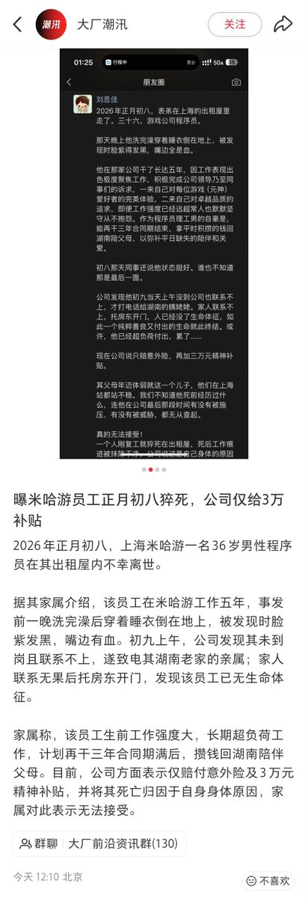

Winit420 #天苑四
@winterfruit_1
@whyyoutouzhele @suikachanqwq 原神牛逼

李老师不是你老师
@whyyoutouzhele
2月24日，上海，米哈游一名36岁程序员在出租屋里猝死。
据其家属介绍，该员工在米哈游工作五年，事发前一晚洗完澡后穿着睡衣倒在地上，被发现时脸紫发黑，嘴边有血。
初九上午，公司发现其未到岗且联系不上，遂致电其湖南老家的亲属；家人联系无果后托房东开门，发现该员工已无生命体征。 https://t.co/EctDXXaBS9